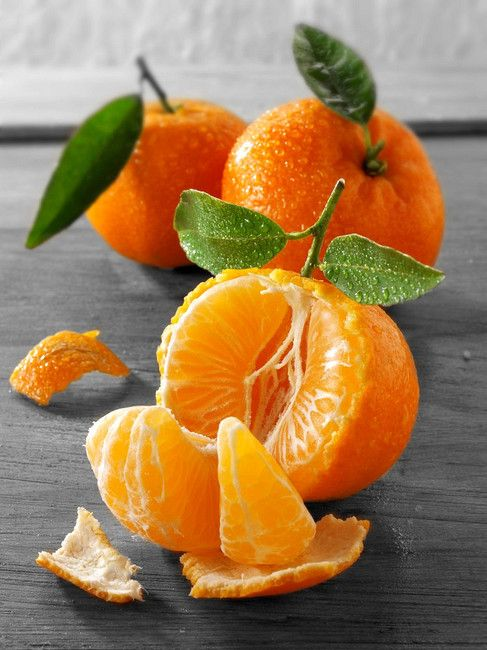

Що ж це за фрукт такий мандарин?

Мандарин-це фрукт, запах якого в більшості людей асоціюється
із зимою.Жодне зимове свято не обійдеться без ароматних фруктів.
Всі
знають, що мандарин -цитрусовий багато вітамінний фрукт ,
але яка ж його історія? Скільки видів мандарин існує?
І най головніше ,як правильно і швидко чистити мандарини, щоб сік не
брискав на нас? На всі ці питання відповідь можна знайти саме тут!